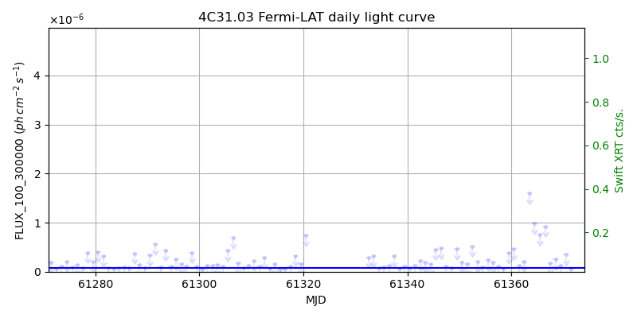
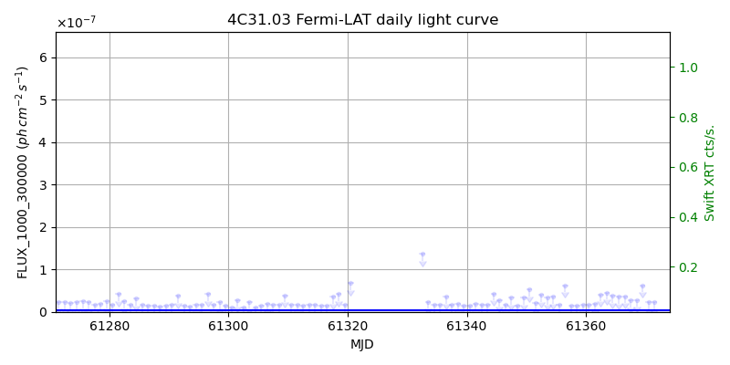

LAT Lightcurve site: https://fermi.gsfc.nasa.gov/ssc/data/access/lat/msl_lc/source/4C_31d03
Swift site: https://www.swift.psu.edu/monitoring/source.php?source=4C31.03
NED: Query
Time of last update of this page: UT: 2026-11-28 16:11 (MJD: 61372.675)
| Property | Value |
|---|---|
| R.A. | 1:12:50.40 |
| Dec. | 32:08:16.8 |
| z | 0.603 |
| 3FGL SpectrumType | PowerLaw |
| 3FGL PL Index | 2.36 |
| 3FGL Flux_100_300000 | 7.01e-08 1 / (s cm2) |
| 3FGL Flux_1000_300000 | 3.04e-09 1 / (s cm2) |
| 3FGL Flux >200 GeV | 2.22e-12 1 / (s cm2) |
| 3FGL Extrap. Crab >200 GeV | 0.01 |
| 3FGL Flux After EBL Absorption >200GeV | 2.12e-13 1 / (s cm2) |
| 3FGL EBL Crab Fraction >200GeV | 0.00 |

| MJD | dMJD | Flux | dFlux | Frac3FGL | FracCrab>200GeV | EBLFracCrab>200GeV |
|---|---|---|---|---|---|---|
| 61367.50 | 0.50 | 1.72e-07 | 0.00e+00 | 0.00 | 0.00 | 0.00 |
| 61368.50 | 0.50 | 2.50e-07 | 0.00e+00 | 0.00 | 0.00 | 0.00 |
| 61369.50 | 0.50 | 1.22e-07 | 0.00e+00 | 0.00 | 0.00 | 0.00 |
| 61370.50 | 0.50 | 3.51e-07 | 0.00e+00 | 0.00 | 0.00 | 0.00 |
| 61371.50 | 0.50 | 5.89e-08 | 0.00e+00 | 0.00 | 0.00 | 0.00 |
| MJD | dMJD | Flux | dFlux | Frac3FGL | FracCrab>200GeV | EBLFracCrab>200GeV |
|---|---|---|---|---|---|---|
| 61335.50 | 3.50 | 6.02e-08 | 0.00e+00 | 0.00 | 0.00 | 0.00 |
| 61342.50 | 3.50 | 6.75e-08 | 0.00e+00 | 0.00 | 0.00 | 0.00 |
| 61349.50 | 3.50 | 3.14e-08 | 0.00e+00 | 0.00 | 0.00 | 0.00 |
| 61356.50 | 3.50 | 5.63e-08 | 0.00e+00 | 0.00 | 0.00 | 0.00 |
| 61363.50 | 3.50 | 2.87e-07 | 0.00e+00 | 0.00 | 0.00 | 0.00 |

| MJD | dMJD | Flux | dFlux | Frac3FGL | FracCrab>200GeV | EBLFracCrab>200GeV |
|---|---|---|---|---|---|---|
| 61367.50 | 0.50 | 2.69e-08 | 0.00e+00 | 0.00 | 0.00 | 0.00 |
| 61368.50 | 0.50 | 2.78e-08 | 0.00e+00 | 0.00 | 0.00 | 0.00 |
| 61369.50 | 0.50 | 6.24e-08 | 0.00e+00 | 0.00 | 0.00 | 0.00 |
| 61370.50 | 0.50 | 2.33e-08 | 0.00e+00 | 0.00 | 0.00 | 0.00 |
| 61371.50 | 0.50 | 2.30e-08 | 0.00e+00 | 0.00 | 0.00 | 0.00 |

| MJD | dMJD | Flux | dFlux | Frac3FGL | FracCrab>200GeV | EBLFracCrab>200GeV |
|---|---|---|---|---|---|---|
| 61335.50 | 3.50 | 7.46e-09 | 0.00e+00 | 0.00 | 0.00 | 0.00 |
| 61342.50 | 3.50 | 5.07e-09 | 0.00e+00 | 0.00 | 0.00 | 0.00 |
| 61349.50 | 3.50 | 9.78e-09 | 0.00e+00 | 0.00 | 0.00 | 0.00 |
| 61356.50 | 3.50 | 1.13e-08 | 0.00e+00 | 0.00 | 0.00 | 0.00 |
| 61363.50 | 3.50 | 4.06e-09 | 0.00e+00 | 0.00 | 0.00 | 0.00 |
--------------------------------------------------------- Using user-supplied coords: 1:12:50.40 32:08:16.8 2000 --------------------------------------------------------- FLWO UT night of: 2026-11-29 Local Sid. @ Midnight: 04:08 Sunset (-15.0) (local, UT): 18:31 01:31 Sunrise (-15.0) (local, UT): 05:53 12:53 Moonrise (local, UT): 21:57 04:57 Moonset (local, UT): Moon phase: 0.72 --------------------------------------------------------- AzTime LSID UT Obj_el Obj_az Mn_el Mn_az Sep. --------------------------------------------------------- 18:31 22:39 01:31 57.3 78.4 -32.9 32.1 98.3 19:01 23:09 02:01 63.6 80.3 -29.4 38.9 98.6 19:31 23:39 02:31 69.9 81.9 -25.4 45.0 99.0 20:01 00:09 03:01 76.3 83.2 -21.0 50.6 99.3 20:31 00:39 03:31 82.6 83.0 -16.2 55.6 99.6 21:01 01:09 04:01 88.8 57.9 -11.1 60.2 99.9 21:31 01:39 04:31 84.6 278.1 -5.4 64.5 100.2 22:01 02:09 05:01 78.2 276.6 0.4 68.5 100.5 22:31 02:39 05:31 71.9 277.6 5.8 72.2 100.8 23:01 03:10 06:01 65.5 279.2 11.6 75.8 101.0 23:31 03:40 06:31 59.2 281.0 17.5 79.4 101.3 00:01 04:10 07:01 53.0 283.0 23.6 82.9 101.5 00:31 04:40 07:31 46.8 285.1 29.7 86.5 101.7 01:01 05:10 08:01 40.6 287.3 35.8 90.3 102.0 01:31 05:40 08:31 34.6 289.7 42.0 94.4 102.2 02:01 06:10 09:01 28.6 292.3 48.1 99.1 102.4 02:31 06:40 09:31 22.7 295.0 54.2 104.7 102.6 03:01 07:10 10:01 17.0 297.9 60.1 111.7 102.8 03:31 07:40 10:31 11.5 301.1 65.6 121.1 103.0 04:01 08:10 11:01 6.2 304.5 70.5 134.7 103.2 04:31 08:40 11:31 1.2 308.2 74.0 154.7 103.4 05:01 09:11 12:01 -2.6 312.3 75.2 181.1 103.6 05:31 09:41 12:31 -8.6 316.7 73.6 206.8 103.8 05:53 10:02 12:53 -11.7 320.2 71.0 221.2 104.0 --------------------------------------------------------- Dark hours >55 deg.: 3.43 srcstart (UT): 2026-11-29 01:31 srcend (UT): 2026-11-29 04:57